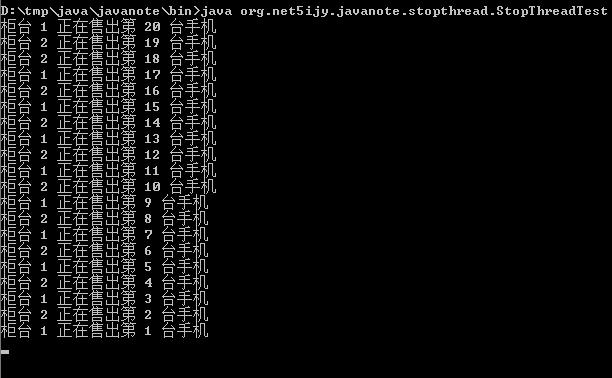

第二十五节 线程的停止
一、标识变量设置结束点
run 方法结束，线程就结束了。可以在类里面定义标记来设置结束时机。
为商场设置了 20 台手机的库存，启动了两个柜台销售这些手机。
class Mall {
private String name = "Mall-1"; // 商场名称
private int mobileCount = 100; // 库存
private int saleBarCount = 1; // 柜台个数
public Mall() {}
public Mall(String name) {
this.name = name;
}
public void setSaleBarCount(int saleBarCount) {
this.saleBarCount = saleBarCount;
}
public int getSaleBarCount() {
return this.saleBarCount;
}
public void setMobileCount(int mobileCount) {
this.mobileCount = mobileCount;
}
/*
创建柜台，启动销售线程
*/
public void sale() {
for (int i = 1; i <= saleBarCount; i++) {
new SaleBar("柜台 " + i).start();
}
}
/*
销售一台手机
*/
private synchronized void saleMobile(SaleBar bar) {
if (mobileCount <= 0)
return;
System.out.println(bar.getBarName() + " 正在售出第 " + mobileCount + " 台手机");
mobileCount--;
}
private class SaleBar extends Thread {
private String barName;
public SaleBar(String barName) {
this.barName = barName;
}
public void setBarName(String barName) {
this.barName = barName;
}
public String getBarName() {
return this.barName;
}
public void run() {
while(true) {
saleMobile(this); // 调用Mall对象的saleMobile方法销售手机
try {
Thread.sleep(10);
} catch(InterruptedException e) {}
}
}
}
}
public class StopThreadTest {
public static void main(String[] args) {
Mall mall = new Mall("手机商场 1");
mall.setMobileCount(20);
mall.setSaleBarCount(2);
mall.sale();
}
}

运行程序我们发现手机销售完了之后程序一直停在“柜台 1 正在售出第 1 台手机”的位置不动了，原因在于 SaleBar 中的 run 方法中使用了 while( true ) 死循环的方式调用 saleMobile 方法，所以即使 mobileCount 为 0 也无法真正停止 SaleBar 的销售线程。
所以 run 方法中的 while循环应该使用 mobileCount > 0 在库存为 0 时停止线程。
修改 run 方法代码：
public void run() {
while(mobileCount > 0) {
saleMobile(this); // 调用Mall对象的saleMobile方法销售手机
try {
Thread.sleep(10);
} catch(InterruptedException e) {}
}
}
二、interrupt()方法（了解即可）
如果销售线程因为某种原因处在冻结状态，它是无法读取到 mobileCount > 0 的，此时可以使用 interrupt() 方法强制中断，但是会出现 InterruptedException 异常。
public void interrupt() 中断线程。
如果线程没有中断，则该线程的 checkAccess 方法就会被调用，这可能抛出 SecurityException。
如果线程在调用 Object 类的 wait()、 wait(long) 或 wait(long, int) 方法，或者该类的 join() 、join(long)、join(long, int)、sleep(long) 或 sleep(long, int) 方法过程中受阻，则其中断状态将被清除，它还将收到一个 InterruptedException。
第二十四节 线程间通信（下）
第二十六节 String 和 StringBuffer
加入 QQ 群：5ijy网站开发交流
 ，获取更多源代码和开发环境配置信息。
，获取更多源代码和开发环境配置信息。